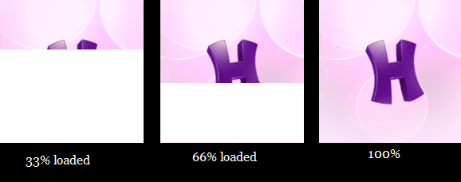
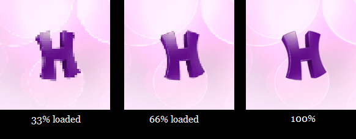

网页上的图片，先加载一个模糊预览，然后逐渐变清晰，怎么实现的？
源起
之前文章多是折腾记录，宁可长篇大论，也懒得截 / 画图。前几天，发演示文档截图，一篇的配图是之前所有配图总量的 7 倍。博客托管在 Github pages，因不~明原因，访问速度越来越慢。图多 + 访问慢，居然偶尔能看到图片加载的过程 —— 就是那种等待投影幕放下来的效果，偏偏放得很慢，还卡顿。

通过压缩图片大小算是初步解决。
可如果访问速度进一步恶化呢？这时想起之前见过另一种加载效果，不是下放幕布，而是类似对焦，先显示一幅非常模糊的图片，然后逐渐变清晰。于是有了开头一问。

直觉技术上应该不难，之前居然没想过去了解。
常见方案
经过尝试不同的关键词组合，大概知道关键词应该是 ‘progressive image loading’ / 渐进式图像加载。看完网上讨论，发现可以分成两大类方案：
代码方案
具体实现方式很多，web 的 app 的，自己写代码，或者调用第三方库。但基本原理是相通的：
- 先加载一个很小很模糊的预览图，拉伸到目标图像大小。这样会锯齿，没关系，加个高斯模糊（或者别的模糊算法）。
- 利用预览安抚用户的时间，把原图下载下来。
- 两图叠加前图透明也好，图片替换也好，换的同时，将模糊渐变到 0，看到原图。
文件编码方案
查到的有 interlace gif，progressive jpeg，interlace png 三种。实际上只是格式规范选用的术语不同，效果上都是 progressive 渐进显示。
本质上是改变文件的数据块组织顺序，从原本的线性从左上到右下，变成按照某些特定的方式组织，让用户端在只下载了少量数据时，就能显示图片轮廓。然后随着下载的数据越来越多，逐渐清晰，直至显示原图。
代码方案显然更灵活，可以根据需要实现不同的效果。而且因为加了模糊，不会出现难看的锯齿效果。
不过相对应地，代码方案开发和维护的负担也增加。如果平台支持图片格式的 progressive 特性（主要是 浏览器，暂时不考虑 app），直接改动文件显然是更省事的方案。
显然我不愿意为这么小的事情在博客模版加代码，格式自带的编码方案是当前首选。代码方案留待以后有需要再试。
生成
据说常见的制图工具，导出选项里都有对应的选项。png 和 gif 格式的选项是 interlace（一般翻译成交错），jpeg(jpg) 的选项则是 progressive （翻译成 渐进）。
网上大家的截图证明 Photoshop 是可以的。我尝试 GIMP 2.8 是可以的。惊喜的是，常用的其中一个图片浏览器 XnView 也可以。用 XnView 打开图片，另存为 > 选项 > 选好格式和选项后保存。非常快捷，与之相比，特意打开一个大型的 编辑 / 设计 软件只修改文件的编码方式简直杀鸡牛刀。
判断
问题又来了：怎么判断一个图片是否打开了 progressive 选项呢？
答案是：不知道 。试了不同的软件打开，然后查看图片详情和元信息，没有一个地方显示是否打开了 interlace / progressive 特性。
注：在文章快写完时，才发现用 XnView 打开，显示『图像信息』，在格式一栏有显示，非常地不起眼（本以为会有一个独立字段显示）。
- png 会显示
Portable Network Graphics (Interlaced)，多出括号里的 Interlaced。- gif 会显示
Compuserve GIF (Version 89a - Interlaced)，同样多了 Interlaced.- jpg 文件仍然没有看到区别。
看不出差别，意味着没法判断图片是否 progressive。正常网速下，肉眼根本无法看到加载过程。你也很难模拟一个特别卡的网络环境，去测试加载过程。
后来找到一个在线测试，可以测试网页引用的图片是否 progressive：https://webpagetest.org/。输入要测试页面的地址，点击开始测试即可。有很多测试项，其中 Performance Review 页可以看资源的加载情况。其他测试项对优化网页也有一定的参考意义。
不过，
- 只支持 progressive jpg 检测。
- 需要先把网页发布到外网访问，测试后发现不对再优化。
- 这个测试使用了谷歌的 recaptcha 验证，很多朋友会用不了。
就本文的目的而言，意义不大。
格式规范 Specifications
考虑到博客配图以图表为主，多数是有清晰边缘的色块，很少实景照片，而且 png 支持 alpha 通道，显然选择 png 格式会得到更好的显示效果，压缩率也（大概率）不会比 jpg 差。所以下面主要研究 png 的格式。
RFC2083
查维基可知，png 是 Portable Network Graphics 或 PNG is Not GIF 的缩写。1996 年由 IETF（Internet Engineering Task Force，互联网工程任务组）起草，并成为 W3C 建议，后成为 RFC2083。现行版本是 2003 年的国际标准 ISO 15948。
规范很长，规定了格式的定义的方方面面。没打算实现一个 encoder 或者 decoder，直接搜 interlace 部分。
对比两版规范可以发现，interlace 在第一版就已经有了，而且基本没有改动。我们看最新的规范
|
|
大意：定义了 0 和 1 两种交错方式（分别是关闭和打开），剩下的值为未来保留。那这个值保存在哪里呢？
|
|
大意：一个 png 文件以 PNG 签名开头，然后是一系列数据块。第一号数据块是 IHDR（Image Header） 块，以 4 字节的 块类型 字段开头，然后是一系列字段，interlace method 是第 13 个字节。
再去看这里提到的 PNG 签名：
|
|
略长挑重点：PNG 签名占据开头的 8 个字节。一个数据块则是 4 字节标数据块大小 LENGTH， 4 字节块类型，LENGTH 字节大小的数据，CRC 校验码。
这些信息足够做一个小学算术：8（PNG 签名）+ 4 （块长度）+ 4（块类型字段）+ 13（块数据内字节顺序） = 29。Interlace method 字段在 第 29 个字节。而且由于前面的数据都是固定不可省略的，所以这个顺序也是固定的。
试验
随便找了一张 png，用 XnView 生成一张 interlace 版本，分别用 十六进制编辑器打开：
标准版：
|
|
交错版：
|
|
- 开头 8 个字节：都是
89 50 4E 47 0D 0A 1A 0A，符合文档说明。 - 第二部分 4 个字节：都是
00 00 00 0D（13），符合 IHDR 数据长度是 13。 - 第三部分 4 个字节：
49 48 44 52（IHDR），是块类型。 - 第四部分 13 个字节，直接看 第 13个：符合 标准版是
00，交错版是01。
再试了几个文件，都符合以上规律。说明对规范的理解是正确的。那么在没有找到工具支持查看 interlace 特性时，可以直接用 十六进制编辑器打开 判断：第 29 个字节，或者像这样每行 16 个字节排版的第 2 行倒数第 4 个字节。
交错实现原理
在文档 4.5 Encoding the PNG image 和 8 Interlacing and pass extraction 解释了 interlace 的原理。篇幅所限，就不贴原文了。
|
|
核心其实就是这个 8x8 的顺序表。interlace 会把整个图像分割成 N 个 8x8 像素的小方块，每块上的像素按照这样的顺序编号。编码传输时，并非从左上到右下顺序进行，而是先把所有的 1 放前面，然后是所有的 2…… 以此类推。
假定现在有一张 16x16 的图，也就是会按上面分成 4 块进行编号。那么传输仅仅 4 个像素（1 / 64）之后，我们就能看到一个模糊的轮廓（这个只有 4 个像素的图会拉伸到原图大小，所以锯齿会非常明显）：
|
|
再传 4 个像素，变成
|
|
再传 8 个像素，变成
|
|
以此类推。从 N 个像素开始构建一个最粗糙的缩略图（reduced image），然后每当传输的像素数量翻一番，清晰度就提高一倍，直到显示出原图。
其他格式
查找文档，理解文档，试验核实，花了一些时间，和占据了颇长的篇幅。考虑到主要用 png，就懒得折腾剩下两种格式了。把文档地址贴出来，有兴趣的朋友可以自己看看。
GIF Version 89a：https://www.w3.org/Graphics/GIF/spec-gif89a.txt
JPEG 官网：https://jpeg.org/
大概扫了一眼，这两种格式要麻烦很多。
GIF 的 interlace flag 比较靠后，前面有好几个数据块，计算偏移会麻烦些。
更麻烦的是 JPEG。JPEG 实际上是一个组织名，联合图像专家组（Joint Photographic Experts Group），用作后缀时实际上是指 JFIF（JPEG File Interchange Format，JPEG 文件交换格式）。但除此之外，还有 JPEG-XT, JPEG Lossless, JPEG 2000, JPEG-XR……等等格式。虽然我知道这里面很多格式并不共享 .jpeg 这个后缀名，而是各自有专属的后缀。但是在全部看完他们的规范之前，还是无法确定他们跟 JPEG 的关系，以及 JPEG 从哪个版本开始支持 progressive 特性 —— 据了解第一版是不支持的，而 JFIF3 的规范文档里，也完全搜不到 interlace 或者 progressive 这些关键词。
好吧，这次就先到这里吧。以后有空，或者用到 JPEG 时再回来继续。
写在后面
其实目前对于 渐进式加载 的需要并没有那么急切。我只是惊讶于自己老早看过这种效果，居然没有想过去探究。感觉应该不复杂，想着了解一下就完了，没想到工具支持不算完善，中文互联网上的资料质量也很参差（基本是互相参考，抄来抄去连排版都不改）。
后面直接去读官方的规范文档，只看某一部分的话，加一点耐心查找和理解，并不难。
最后，前面用到了十六进制编辑器，选择不少；甚至一些文本编辑器，通过插件或者开关也可以支持。我使用的是以下这个，免费不开源，还挺好用，供参考：
https://mh-nexus.de/en/downloads.php?product=HxD20
参考资料
https://jmperezperez.com/more-progressive-image-loading/

本文为本人原创，采用知识共享 “署名-非商业性使用-相同方式共享” 4.0 (CC BY-NC-SA 4.0)”许可协议进行许可。
本作品可自由复制、传播及基于本作品进行演绎创作。如有以上需要，请留言告知，在文章开头明显位置加上署名（Jayce Chant）、原链接及许可协议信息，并明确指出修改（如有），不得用于商业用途。谢谢合作。
请点击查看协议的中文摘要。